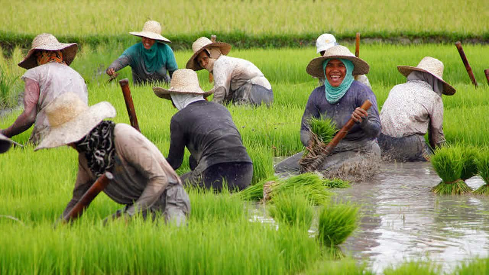
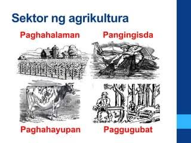

🌾 Agrikultura
Aralin 2 - Quarter 4
Ano ang Agrikultura?
Isang agham at sining na may kinalaman sa pagpaparami ng mga hayop at mga tanim o halaman. Ito ay may kaugnayan sa lahat ng gawain na sangkot ang mga hayop at halaman.
Pinagmulan ng salita: AGER = Lupa; CULTURA = Paglilinang
MGA GAWAIN SA SEKTOR NG AGRIKULTURA
- Pagsasaka
- Pangingisda
- Paghahayupan
- Paggugubat/Pagtotroso
Gampanin ng Pagsasaka
Pangunahing pananim: palay, mais, niyog, tubo, saging, pinya, atbp. na karaniwang kinokonsumo sa loob at labas ng bansa.
Tinatayang umabot ng ₱797.731 bilyon ang kita mula sa pagsasaka.
Gampanin ng Pangingisda
Nauuri sa tatlo: komersiyal, munisipal, at aquaculture. Bahagi din nito ang panghuhuli ng hipon, sugpo.
Gampanin ng Paghahayupan
May kinalaman sa mga hayop na itinaas para sa karne, hibla, gatas, itlog, atbp. Kasama rito ang pang-araw-araw na pangangalaga, pagpili ng pag-aanak at pagpapalaki ng mga hayop.
Gampanin ng Paggugubat
Patuloy na nililinang ang ating mga kagubatan bagamat tayo ay nahaharap sa suliranin ng pagkaubos ng mga yaman nito. Pinagkukunan ng plywood, tabla, troso, at veneer. Pinagkakakitaan din ang rattan, nipa, anahaw, kawayan, atbp.
Kahalagahan ng Agrikultura
- Pinagmumulan ng pagkain
- Pinagkukunan ng hilaw na materyales upang makabuo ng panibagong produkto
- Nagkakaloob ng trabaho sa maraming Pilipino
- Nagpapasok ng dolyar sa bansa
- Pinagkukunan ng sobrang manggagawa patungo sa ibang sektor ng ekonomiya
Suliranin sa Agrikultura
Pagsasaka: pagliit ng lupang sakahan, kakulangan ng makabagong teknolohiya, kakulangan ng pasilidad at imprastraktura, kakulangan ng suporta mula sa iba pang sektor, prayoridad sa industriya, epekto ng climate change.
Pangingisda: mapanirang operasyon ng malalaking komersiyal na mangingisda, epekto ng polusyon sa pangisdaan, lumalaking populasyon ng bansa, kahirapan sa hanay ng mga mangingisda.
Paghahayupan: pagkakaroon ng mga peste sa alagang hayop tulad ng baboy at manok.
Paggugubat: mabilis na pagkaubos ng mga likas na yaman.
Mga Patakaran at Programa
- Panahon bago nasakop ang Pilipinas – lupa sa pamamagitan ng pagiging unang nagtayo ng bahay
- Panahon ng Kastila – Encomienda System
- Panahon ng Amerikano – Land Registration Act 1902, Public Land Act 1902
- Panahon ng Kasarinlan – Batas Republika Blg. 1160, CARP 1988, Atas ng Pangulo Blg. 2/27
- CARP 2003 – gulayan, scholarship program, kalahi agrarian reform zones
Sangay ng Pamahalaan na Tinutulungan ang Agrikultura
- Department of Agriculture (DA)
- Bureau of Fisheries and Aquatic Resources (BFAR)
- Bureau of Animal Industry (BAI)
- Ecosystem Research and Development Bureau (ERDB)
- LANDBANK of the Philippines

